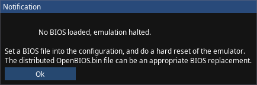

Mips API
Description
PCSX-Redux has a special API that mips binaries can use :
1 2 3 4 5 6 7 8 9 | |
The API needs DEV8/EXP2 (1f802000 to 1f80207f), which holds the hardware register for the bios POST status, to be expanded to 1f8020ff.
Thus the need to use a custom crt0.s if you plan on running your code on real hardware.
The default file provided with the Nugget+PsyQ development environment does that:
1 2 3 4 5 6 7 8 9 10 11 | |
Functions
The following functions are available :
| Function | Usage |
|---|---|
pcsx_putc(int c) |
Print ASCII character with code c to console/stdout. |
pcsx_debugbreak() |
Break execution (Pause emulation). |
pcsx_execSlot(uint8_t slot) |
Executes Lua function at PCSX.execSlots[slot]. The slot value can be between 1 and 255. If no Lua function exists within a slot, then this behaves the same as pcsx_debugbreak(). |
pcsx_exit(int code) |
Exit emulator and forward code as exit code. |
pcsx_message(const char* msg) |
Create a UI dialog displaying msg |
pcsx_checkKernel(int enable) |
Enable or disable kernel checking. |
pcsx_isCheckingKernel() |
Returns truthy if kernel checking is enabled. |
pcsx_present() |
Returns 1 if code is running in PCSX-Redux |
pcsx_initMsan() |
Initialize memory sanitizer system. |
pcsx_resetMsan() |
Reset memory sanitizer system. |
pcsx_msanAlloc(uint32_t size) |
Allocate memory with memory sanitizer. |
pcsx_msanFree(void* ptr) |
Free memory with memory sanitizer. |
pcsx_msanRealloc(void* ptr, uint32_t size) |
Reallocate memory with memory sanitizer. |
Example of a UI dialog created with pcsx_message() :

Kernel Checker
The kernel checking feature is used to try and catch unwanted accesses to the kernel, which are usually a sign of a bug in the code, such as a buffer overflow or a null pointer dereference. If the kernel checking feature is enabled, the emulator will break execution and display a message in the console if it detects an unwanted access to the kernel. The following actions are considered unwanted accesses to the kernel:
- Reading or writing to a kernel address from a user-mode address and while not in a kernel-mode context such as while in the ISR. The ISR sets up a stack frame within the kernel space, so callbacks from the kernel and into the user space will be using kernel space as the stack. This means that a null pointer dereference in a callback from the kernel during an interrupt or exception will not be caught by the kernel checking feature.
- An indirect jump to a kernel address from a user-mode address and that isn't 0xa0, 0xb0, or 0xc0, and that isn't a
jr $rainstruction. Direct jumps and branches to kernel addresses should be compiler-level problems, so they are not checked for. Thejr $raexception to the rule is because callbacks from the kernel will usejr $rato return to the kernel. Optimizations which bypass thejr $rainstruction by using a different register to return to the kernel during a callback will cause false positives.
The feature is disabled by default as many games and software will access the kernel in various ways, and it can be enabled by calling pcsx_checkKernel(1). The feature can be disabled by calling pcsx_checkKernel(0). Since many startup sequences will access the kernel to patch it or clean it, it is recommended to enable the feature after the startup sequence has completed. Some libraries may also access the kernel during their normal operations. The user can simply disable the checker temporarily by toggling it before and after calling such APIs. The kernel space is considered to be all the memory addresses between 0x80000000 and 0x8000ffff. The BIOS is considered to be part of the kernel space in terms of code, so any access to the RAM Kernel space from the BIOS memory space will not trigger any of the kernel checks. The kernel checking feature is only available in the interpreter with the debugger enabled, and it is not available in the dynarec. Trying to enable the feature while using the dynarec, or while the debugger is disabled, will not have any effect.
Memory Sanitizer
The memory sanitizer system of PCSX is inspired of various similar tools. It can detect use-after-frees, buffer overflows, and reads from uninitialized memory. Enabling the memory sanitizer is done through the pcsx_initMsan() function call. The emulator will immediately allocate an extra 2GB of memory to store the memory sanitizer data and metadata. Once enabled, the user can call pcsx_msanAlloc(), pcsx_msanFree(), and pcsx_msanRealloc() to allocate, free, and reallocate memory, working as expected from a normal C library. The memory sanitizer will keep track of the memory allocated and will check for the following issues:
- Use-after-frees: If the user tries to access memory that has been freed, the memory sanitizer will break execution and display a message in the console.
- Double frees: If the user tries to free memory that has already been freed, the memory sanitizer will break execution and display a message in the console.
- Corrupted pointer: If the user tries to free or reallocate a pointer that is not a valid pointer, the memory sanitizer will break execution and display a message in the console.
- Buffer overflows: If the user writes to memory before or after the allocated size, up to 1kB, the memory sanitizer will break execution and display a message in the console.
- Reads from uninitialized memory: If the user tries to read from memory that has not been written to first, the memory sanitizer will break execution and display a message in the console.
Internally, the memory sanitizer will allocate memory to the range 0x20000000-0x80000000, which is 1.5GB large. Note that for the use-after-free detection to work, the memory sanitizer will never actually free anything, and so it is possible to run out of memory if the user allocates too much memory. Calling pcsx_resetMsan() will re-initialize the memory sanitizer back to its original state. The memory sanitizer is available at all times, and is not affected by the debugger setting nor the dynarec.